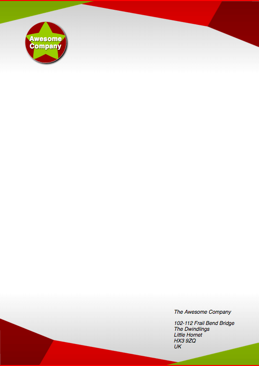

If you want to make the right impression, writing a letter on nice letterheaded paper can be a really good start. In this assessment we'll challenge you to create an online template to achieve such a look.
| Prerequisites: | Before attempting this assessment you should have already worked through all the articles in this module. |
|---|---|
| Objective: | To test comprehension of CSS box model, and other box-related features such as implementing backgrounds. |
To get this assessment started, you should:
index.html and style.css in a new directory.Alternatively, you could use a site like JSBin or Glitch to do your assessment. You could paste the HTML and fill in the CSS into one of these online editors. If the online editor you are using doesn't have a separate CSS panel, feel free to put it in a <style> element in the head of the document.
Note: If you get stuck, then ask us for help — see the {{anch("Assessment or further help")}} section at the bottom of this page.
You have been given the files needed to create a letterheaded paper template. You just need to put the files together. To get there, you need to:
The following screenshot shows an example of what the finished design could look like:

If you would like your work assessed, or are stuck and want to ask for help:
{kind=link}
{kind=link}
{kind=link}